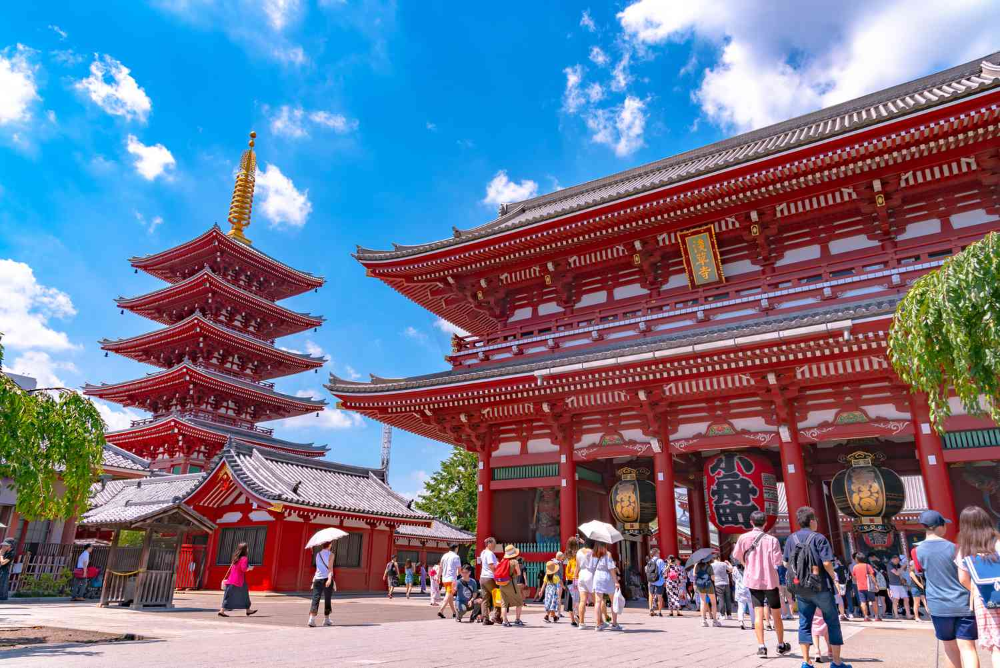

Tokió Temple története

A templom építése
A Tokió Temple évszázadok óta a japán kultúra és vallás központja. Az építése a 7. században kezdődött.

Belső udvarok és szentélyek
A templomban több szentély és gyönyörű udvar található, amelyeket érdemes meglátogatni.